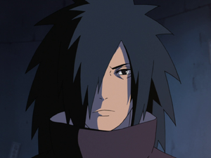
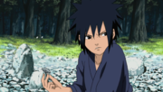
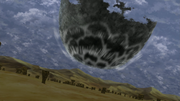
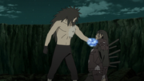

Madara Uchiha (うちはマダラ, Uchiha
Madara) was the legendary leader of the Uchiha clan. He founded Konohagakure alongside his childhood friend and
rival, Hashirama Senju, with the intention of beginning an era of peace. When the two couldn't agree on how to
achieve that peace, they fought for control of the village, a conflict which ended in Madara's death. Madara,
however, rewrote his death and went into hiding to work on his own plans. Unable to complete it in his natural
life, he entrusted his knowledge and plans to Obito Uchiha shortly before his actual death. Years later, Madara
would be revived, only to see his plans foiled and ultimately, and finally, realising the error of his ways and
making amends with Hashirama before his final death.
Background
Madara was born during
the Warring States Period, and was the eldest of Tajima Uchiha's five sons. Madara and his brothers grew up on
the battlefield waging constant war with the Uchiha's rivals: the Senju. Three of his brothers died young,
leaving Madara with only his younger brother, Izuna. Madara and Izuna became very close through their shared
loss and constantly competed with each other to get stronger. This, combined with his naturally strong chakra,
enabled the young Madara to defeat adult Senju in battle and develop a reputation as a genius.
During his infrequent downtime, Madara met a boy his own age named Hashirama. The two quickly developed a
friendly rivalry, be it skipping stones or urinating in rivers. Like Madara, Hashirama was also a shinobi who
had lost his brothers on the battlefield. Together they imagined a world where children like themselves wouldn't
need to fight. As a precaution, Madara and Hashirama did not divulge their family names, but nevertheless
discovered each other's identities: Madara was an Uchiha, Hashirama was a Senju; it was their duty to kill each
other, even if they were friends. Needing to choose between his family and his dreams of peace, Madara chose to
end his friendship with Hashirama so he would have no reservations over killing him in the future, a resolve
strong enough to awaken his Sharingan.
 Over the following years Madara
and Hashirama continued to meet in combat. Madara could never defeat Hashirama — even after acquiring a Mangekyō
Sharingan — and Hashirama could never bring himself to kill someone he still considered a friend, resulting in a
constant stalemate between the two that lasted decades. In time, both Madara and Hashirama became leaders of
their respective clans, a position Hashirama tried to use to broker peace between them. Although some Uchiha
found the offer increasingly tempting, Madara refused due to Izuna's death at the hands of Hashirama's own
brother, Tobirama. Despite this, some Uchiha defected over to the Senju clan out of self-preservation. Madara
then used Izuna's eyes in order to gain "eternal" Mangekyō Sharingan and restore his deteriorating vision. With
this new power he waged one final assault against the Senju and was summarily defeated. Rather than kill Madara
to bring the era of war to an end, Hashirama offered to kill himself if it would stop the fighting. Madara was
moved by Hashirama's gesture and finally assented to peace.
Over the following years Madara
and Hashirama continued to meet in combat. Madara could never defeat Hashirama — even after acquiring a Mangekyō
Sharingan — and Hashirama could never bring himself to kill someone he still considered a friend, resulting in a
constant stalemate between the two that lasted decades. In time, both Madara and Hashirama became leaders of
their respective clans, a position Hashirama tried to use to broker peace between them. Although some Uchiha
found the offer increasingly tempting, Madara refused due to Izuna's death at the hands of Hashirama's own
brother, Tobirama. Despite this, some Uchiha defected over to the Senju clan out of self-preservation. Madara
then used Izuna's eyes in order to gain "eternal" Mangekyō Sharingan and restore his deteriorating vision. With
this new power he waged one final assault against the Senju and was summarily defeated. Rather than kill Madara
to bring the era of war to an end, Hashirama offered to kill himself if it would stop the fighting. Madara was
moved by Hashirama's gesture and finally assented to peace.
Abilities
Madara was one of the most
gifted shinobi in history, recognised as the strongest member of the Uchiha clan in his lifetime, even after
decades of his death. A child prodigy, he killed several adult Senju before he had awakened his Sharingan.
History remembers him as the only one able to compete with Hashirama Senju, a "God of Shinobi", and pushed him
to his absolute limits. When Obito began operating under Madara's name, fear of Madara's power forced the Five
Great Shinobi Countries, and the neutral Land of Iron, to band together and trigger the Fourth Shinobi World
War, with Tsunade exclaiming that Madara's name itself was power. After his return from death and acquisition of
Wood Release, Madara was more than powerful enough to defeat the Five Kage at once, and later the nine tailed
beasts after stealing Kurama's chakra from alliance Shinobi, along with Hashirama's senjutsu chakra and entering
Sage Mode.
Madara was born
with very powerful chakra, described as very foul and evil by both the Nine-Tails and Tobirama Senju. This is
partly because he inherited Indra's chakra. His large chakra reserves allowed him to fight nonstop for
twenty-four hours before collapsing, and in his old age, summon the Demonic Statue of the Outer Path from its
cage in the moon. He was skilled in chakra control as he could perform complicated techniques with a single hand
seal. He could also quickly absorb and synchronise senjutsu chakra with his own and therefore enter Sage Mode
via the Hashirama face on his chest, despite having no prior training in senjutsu. He was also able to
distribute his chakra evenly among twenty five wood clones, each still having enough power to pose a threat
against the Five Kage.